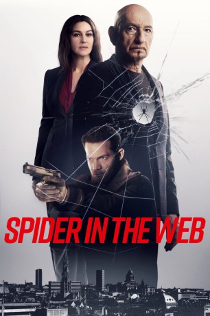

#12190 Spider In The Web
 
 IMDB-Wertung: 4.4 / 10
IMDB-Wertung: 4.4 / 10  Tomatometer: 75
Tomatometer: 75  Metascore: 0
Metascore: 0 
Einst gehörte Geheimagent Adereth zu den Besten seines Fachs. Mittlerweile zählen ihn seine Vorgesetzten beim Mossad jedoch zum alten Eisen und verdächtigen ihn, beim Verfassen seiner Berichte nicht immer bei der Wahrheit zu bleiben. Für seine letzte Mission wird ihm daher auch der junge Daniel als Überwacher zur Seite gestellt. Gemeinsam sollen sie geheime Informationen über den Verkauf chemischer Waffen an Syrien beschaffen. Als jedoch die mysteriöse Angela auftaucht, verschieben sich die Grenzen zwischen Gut und Böse und es ist unklar, auf welcher Seite eigentlich Adereth und Daniel stehen.
Jahr: 2019
Dauer: 113 Minuten
FSK: 12
Land: Israel Studio: Concorde Home EntertainmentTonspuren: DTS - ,
Untertitel: Deutsch,
Auflösung: 1080p (1920x808) Größe: 4444 MB
Genre: Thriller
Regisseur: Eran Riklis
Drehbuch: Gidon Maron, Emmanuel Naccache
Soundtrack: Jonathan Riklis
Darsteller:
 Ben Kingsley als Adereth
Ben Kingsley als Adereth Monica Bellucci als Angela Caroni
Monica Bellucci als Angela Caroni Itay Tiran als Daniel
Itay Tiran als Daniel- Itzik Cohen als Samuel
- Filip Peeters als Jan Martens
- Hilde Van Mieghem als Anne-Marie
 Makram Khoury als Nader
Makram Khoury als Nader Marcel Hensema als Ruud Van Der Veen
Marcel Hensema als Ruud Van Der Veen- Luk Wyns als Guard Alexander
- Abbas Shirafkan als Abductor #2
- Rick Nicolet als Woman On Train
- Stilian Keli als Bouncer
- Truus de Boer als Waitress (uncredited)
- Yakup Uzun als Business Consultant (uncredited)
- Mathijs Scheepers als Security Guard #1
- Wouter Van Lierde als Receptionist
- Jonas Leemans als Son Of George
- Abigail Abraham als Young Woman
- Ali Cifteci als Hamed
- Noureddine Farihi als Abductor #1
- Zakaria Rghioui als Abductor #3
- Begir Memeti als Mossad Agent
- Florian Westerhoff als Mossad Agent
- Arthur Dony als Mossad Agent
- Fleur Khani als Mossad Agent
- Wim Pulinx als Peér
- Brecht Dael als Teenage Boy
- Ken Muyldermans als Security Guard #2
- Frans Deville als Slegers
- Dirk van der Linden als Jazz Band
- Herman Pardon als Jazz Band
- Piet Verbist als Jazz Band
- Marc Fransen als News Anchor
- Stein Beheydt als Belgian Secret Agent
- Kelly Van Hoorde als Stripper
- Maxine McKenzie als African Woman
- Shakira Azila als African Girl
- Maud Dubois als Katelijne
- Paul Vermandel als Toothless Driver
- Atef Taher als Arab Grocer
- Werner Gielis als Interviewed Man
- Kurt De Meuter als Estate Agent
- Klara De Smedt als Bartender
- Dovy Wiarda als Waiter Bitterpeeén
- Maxim Meukens als Judah
- Jawad Abbas als Mossad Agent (uncredited)
- Daniël Brongers als Mossad agent / analist (uncredited)
- Karl Ferlin als Syrian Scientist (uncredited)
- Kristel Goddevriendt als Passer-by on bike (uncredited)
- Alii Sabedin als Mosad Agent (uncredited)
Datei: X:\2019(N-Z)\Spider In The Web (2019, FSK12, 1920x808).mkv seit 30.12.2019
Festplatte: HD 2018(G-Z)-2019(A-Z)
 Es gibt insgesamt 62 Filme in der Gruppe '2019(N-Z)'
Es gibt insgesamt 62 Filme in der Gruppe '2019(N-Z)'